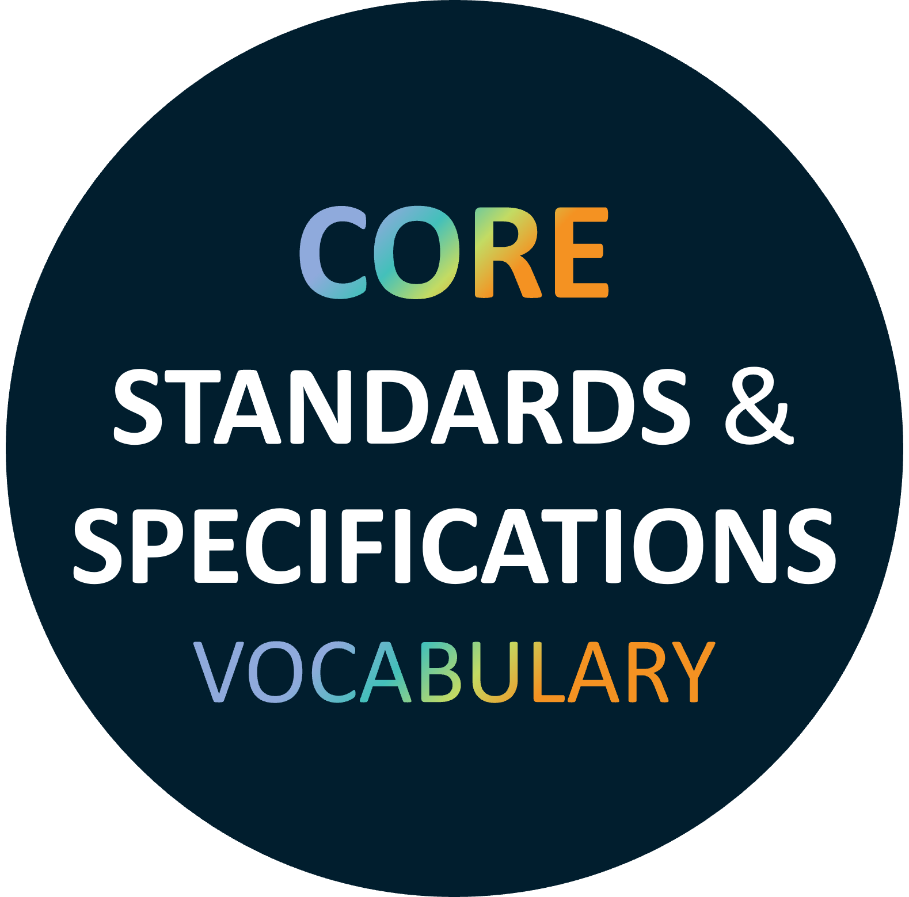

Core Standards and Specifications Vocabulary
Release: 23/05/2025
- This version:
- http://data.europa.eu2sa/cssv#
- Latest version:
- http://data.europa.eu2sa/cssv#
- Revision:
- 1.4.1
- See also:
- https://github.com/isa-camss/CSSV
- https://joinup.ec.europa.eu/collection/common-assessment-method-standards-and-specifications-camss/solution/core-standards-and-specifications-vocabulary-cssv
- Download serialization:


- License:

- Cite as:
- Core Standards and Specifications Vocabulary. Revision: 1.4.1. Retrieved from: http://data.europa.eu2sa/cssv#
Abstract
CSSV is a vocabulary describing standards and specifications used in software development. It is used by ELIS, the EIRA Library of Interoperability Specifications. It is an European Commission solution.Introduction back to ToC
The CSSV is the vocabulary used for the information exchange related to standards and specifications amongst software solutions. It is also the key element for the development and maintenance of the EIRA Library of Interoperability Specifications (ELIS). The CSSV addresses semantic interoperability by reusing existing generic ontologies and vocabularies. This way, the semantics of common concepts and properties are agreed without having to re-discuss them. When concepts or properties have not been identified nor defined for the purposes pursued, they must be proposed either as extensions or from scratch.
The methodological approach followed for the development of the CSSV reuses the following ontologies and vocabularies:
- Data Catalogue Vocabulary (DCAT)
- Friend of a Friend (FOAF)
- The Organization Ontology
- DCMI Metadata Terms (DCTerms)
- The Profiles Vocabulary (PROF)
- Schema
Namespace declarations
| cc | <http://creativecommons.org/ns#> |
| cssv | <http://data.europa.eu2sa/cssv#> |
| dc | <http://www.omg.org/spec/UML/20131001/UMLDC> |
| dcat | <http://www.w3.org/ns/dcat#> |
| dct | <http://purl.org/dc/terms/> |
| foaf | <http://xmlns.com/foaf/0.1/> |
| org | <http://www.w3.org/ns/org#> |
| owl | <http://www.w3.org/2002/07/owl#> |
| pav | <http://purl.org/pav/> |
| prof | <https://www.w3.org/TR/dx-prof/#> |
| rdf | <http://www.w3.org/1999/02/22-rdf-syntax-ns#> |
| rdfs | <http://www.w3.org/2000/01/rdf-schema#> |
| sch | <https://schema.org/> |
| skos | <http://www.w3.org/2004/02/skos/core#> |
| vann | <http://purl.org/vocab/vann/> |
| xml | <http://www.w3.org/XML/1998/namespace> |
| xsd | <http://www.w3.org/2001/XMLSchema#> |
Core Standards and Specifications Vocabulary: Overview back to ToC
This ontology has the following classes and properties.Classes
Object Properties
- Combined in
- Combines
- Configured in
- Configures
- Contact point
- Creator
- distribution
- Is aspect of
- Is maintained by
- Is recommended by
- Previous version
- Theme
Data Properties
Core Standards and Specifications Vocabulary: Description back to ToC
The main class of the CSSV model is the “Specification”. A conceptual approach to define Specification is by aligning with the one undertaken by Joinup.
As represented in the conceptual model of the CSSV, a Specification is an asset, since it inherits from the dcat:Dataset, which inherits from the dcat:Resource. A Specification, besides a document, can be a Standard, an Application Profile, and/or a Family or a collection of other specifications. The CSSV model defines:
- Specification, which describes a document with normative guidelines or characteristics that can be used consistently to ensure that materials, products, processes and services conform to one or a set of requirements (ISO). Specifications are the cornerstone of interoperability, as they set the grounds for the design and development of interoperable and reusable solutions based in common services at the lowest level.
- A Standard as a specification that has reached a certain maturity and widespread adoption and potentially endorsed, meaning that it is recognized and supported by a community or sanctioned by an authority.
- An Application Profile as customization of one or more existing specifications potentially for a given use case or a policy domain adding an end-to-end narrative describing and ensuring the interoperability of its underlying specification(s). By customization, we understand the “addition of more specificity by identifying mandatory, recommended, and optional elements, as well as by defining controlled vocabularies to be employed”.
- A Family as a collection of interrelated and/or complementary specifications, standards, or application profiles and the explanation of how they are combined, used, or both.
A collection of Specifications differs from a Family of Specifications in the fact that the relationship amongst themselves is not explicit. In the CSSV model, a collection of Specifications is an Asset that is related to other Assets and that is realized as an individual of a Specification. In other words, a Specification that reuses the dct:relation property of its base class dcat:Resource.
There are occasions where collections of Specifications are applied to a context or a domain in a specific “configuration”. Thus, application profiles may conform sets of “themed” specifications. For this, the CSSV model uses the property “configures/includedIn” and the dcat:theme property pointing at a skos:Concept (i.e. a code, see the DCAT model above).
It is important to note that the descendants of the specifications are all “disjoint”. Thus, Application Profiles and Families are Specifications that refer to or put together with other Specifications and/or Standards, but cannot themselves be considered Standards.
One Specification, in time, may become a Standard. In these cases, the authority (author) that defined the Specification may be different from the one that creates and maintains artifacts out of the Standard. Think, for example, of the artifacts produced, maintained, and distributed by the Publications Office of the European Union (OP) in its site EU Vocabularies: all these artifacts are defined by other authorities (e.g. the ISO), whilst the artifacts (e.g. the controlled vocabularies expressed in SKOS, XML, GeneriCode, XML, etc.) are supplied by the OP. For this, the CSSV uses the properties dct:creator and cssv:isMaintainedBy. Additionally, the dcat:Dataset has the property dct:type that can be used to state that the Specification is of type “definition, artifact, or other”. The DCAT vocabulary also provides the possibility of expressing who is responsible for the publication of the definition or the artifacts via the property dct:publisher (see the DCAT model).
The maintainer or publisher of a Specification is a foaf:Agent, which allows great flexibility to the CSSV model as foaf:Agent is the base class in many ontologies. Moreover, a foaf:Agent may represent a member state that recommends the Specification; the property cssv:isRecommendedBy is introduced for this end. The CSSV puts forward the reuse of the Core Person Vocabulary (ISA2 CPV) and the Organization Ontology (W3C Org) for this purpose. Also, the foaf:Agent provides the contact point of the specification.
Concerning the Intellectual Property Rights, they are covered by the fact that a specification, which is a dcat:Resource, allows defining the dct:license and dct:rights.
Finally, note that all the descendants of the ccsv:Specification are disjoint. This entails that an individual of an application profile or family cannot be a standard, but does not preclude that, in time, the application profile or the family can become standards. If that were the case, then individuals of ccsv:Standard would be created to represent the standardization of those specifications that are application profiles and families.
Cross-reference for Core Standards and Specifications Vocabulary classes, object properties and data properties back to ToC
This section provides details for each class and property defined by Core Standards and Specifications Vocabulary.Classes
Application Profilec back to ToC or Class ToC
IRI: http://data.europa.eu2sa/cssv#ApplicationProfile
- has super-classes
- Specification c
- is in domain of
- Configures op, Is aspect of op
- is in range of
- Configured in op
- is disjoint with
- Family c, Standard c
Familyc back to ToC or Class ToC
IRI: http://data.europa.eu2sa/cssv#Family
- has super-classes
- Specification c
- is in domain of
- Combines op
- is in range of
- Combined in op
- is disjoint with
- Application Profile c, Standard c
Specificationc back to ToC or Class ToC
IRI: http://data.europa.eu2sa/cssv#Specification
- has super-classes
- Dataset c
- has sub-classes
- Application Profile c, Family c, Standard c
- is in domain of
- Acronym dp, Alternative dp, Combined in op, Configured in op, Is maintained by op, Is recommended by op, Previous version op, Type dp, Version dp, description dp, identifier dp, title dp
- is in range of
- Combines op, Configures op, Previous version op
Standardc back to ToC or Class ToC
IRI: http://data.europa.eu2sa/cssv#Standard
- has super-classes
- Specification c, Standard c
- is disjoint with
- Application Profile c, Family c
Object Properties
- Combined in
- Combines
- Configured in
- Configures
- Contact point
- Creator
- distribution
- Is aspect of
- Is maintained by
- Is recommended by
- Previous version
- Theme
Combined inop back to ToC or Object Property ToC
IRI: http://data.europa.eu2sa/cssv#combinedIn
- has domain
- Specification c
- has range
- Family c
- is inverse of
- Combines op
Combinesop back to ToC or Object Property ToC
IRI: http://data.europa.eu2sa/cssv#combines
- has domain
- Family c
- has range
- Specification c
- is inverse of
- Combined in op
Configured inop back to ToC or Object Property ToC
IRI: http://data.europa.eu2sa/cssv#configuredIn
- has domain
- Specification c
- has range
- Application Profile c
- is inverse of
- Configures op
Configuresop back to ToC or Object Property ToC
IRI: http://data.europa.eu2sa/cssv#configures
- has domain
- Application Profile c
- has range
- Specification c
- is inverse of
- Configured in op
Contact pointop back to ToC or Object Property ToC
IRI: https://schema.org/contactPoint
- has domain
- Contact Point c
- has range
- Agent c
Creatorop back to ToC or Object Property ToC
IRI: http://purl.org/dc/terms/creator
distributionop back to ToC or Object Property ToC
IRI: http://www.w3.org/ns/dcat#distribution
- has domain
- Dataset c
- has range
- Distribution c
Is aspect ofop back to ToC or Object Property ToC
IRI: http://data.europa.eu2sa/cssv#isAspectOf
- has domain
- Application Profile c
- has range
- Profile c
Is maintained byop back to ToC or Object Property ToC
IRI: http://data.europa.eu2sa/cssv#isMaintainedBy
- has domain
- Specification c
- has range
- Agent c
Is recommended byop back to ToC or Object Property ToC
IRI: http://data.europa.eu2sa/cssv#isRecommendedBy
- has domain
- Specification c
- has range
- Agent c
Previous versionop back to ToC or Object Property ToC
IRI: http://www.w3.org/ns/dcat#previousVersion
- Is defined by
- https://www.w3.org/ns/dcat#
Themeop back to ToC or Object Property ToC
IRI: http://www.w3.org/ns/dcat#theme
- has domain
- Resource c
- is also defined as
- data property
Data Properties
- Access rights
- Access URL
- Acronym
- Alternative
- description
- Download URL
- identifier
- license
- rights
- Theme
- title
- Type
- Version
Access rightsdp back to ToC or Data Property ToC
IRI: http://purl.org/dc/terms/accessRights
Access URLdp back to ToC or Data Property ToC
IRI: http://www.w3.org/ns/dcat#accessURL
- has domain
- Distribution c
- has range
- Literal
Acronymdp back to ToC or Data Property ToC
IRI: http://data.europa.eu2sa/cssv#acronym
- Is defined by
- http://data.europa.eu2sa/cssv#
- has domain
- Specification c
- has range
- Literal
Alternativedp back to ToC or Data Property ToC
IRI: http://data.europa.eu2sa/cssv#alternative
- Is defined by
- http://data.europa.eu2sa/cssv#
- has domain
- Specification c
- has range
- Literal
descriptiondp back to ToC or Data Property ToC
IRI: http://purl.org/dc/terms/description
- has range
- Literal
Download URLdp back to ToC or Data Property ToC
IRI: http://www.w3.org/ns/dcat#downloadURL
- has domain
- Distribution c
- has range
- Literal
identifierdp back to ToC or Data Property ToC
IRI: http://purl.org/dc/terms/identifier
- has range
- Literal
licensedp back to ToC or Data Property ToC
IRI: http://purl.org/dc/terms/license
rightsdp back to ToC or Data Property ToC
IRI: http://purl.org/dc/terms/rights
Themeop back to ToC or Data Property ToC
IRI: http://www.w3.org/ns/dcat#theme
- has range
- Concept ep
- is also defined as
- object property
titledp back to ToC or Data Property ToC
IRI: http://purl.org/dc/terms/title
- has range
- Literal
Typedp back to ToC or Data Property ToC
IRI: http://purl.org/dc/terms/type
Versiondp back to ToC or Data Property ToC
IRI: http://www.w3.org/ns/dcat#version
- Is defined by
- http://www.w3.org/ns/dcat#
Legend back to ToC
op: Object Properties
dp: Data Properties
ep: External Properties
References back to ToC
Add your references here. It is recommended to have them as a list.Acknowledgments back to ToC
The authors would like to thank Silvio Peroni for developing LODE, a Live OWL Documentation Environment, which is used for representing the Cross Referencing Section of this document and Daniel Garijo for developing Widoco, the program used to create the template used in this documentation.